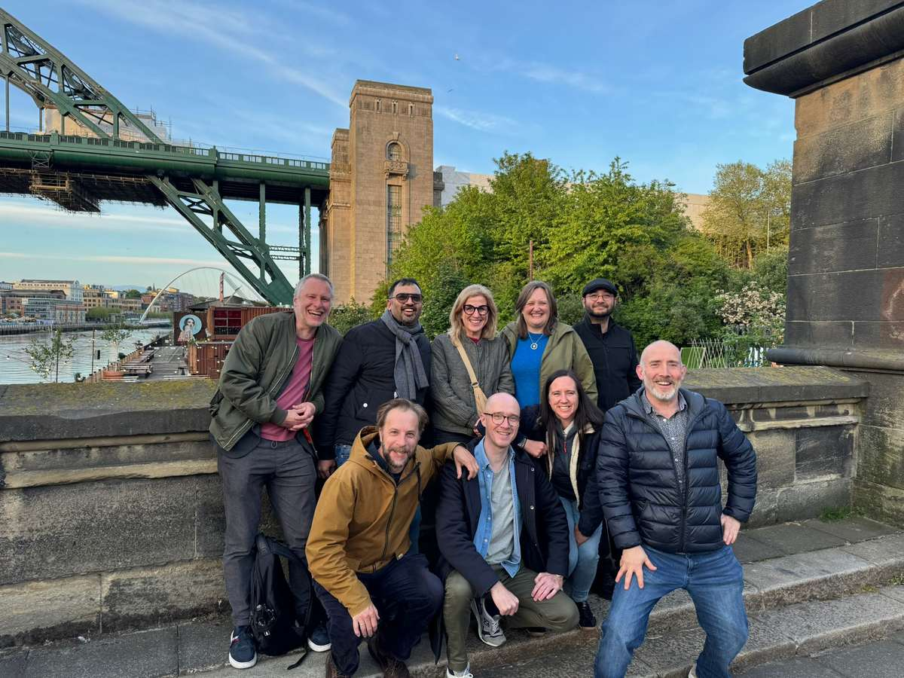
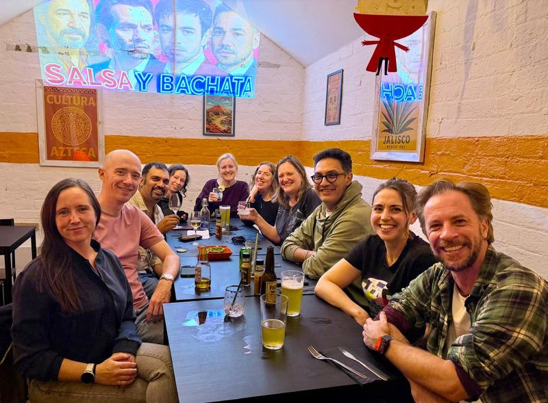
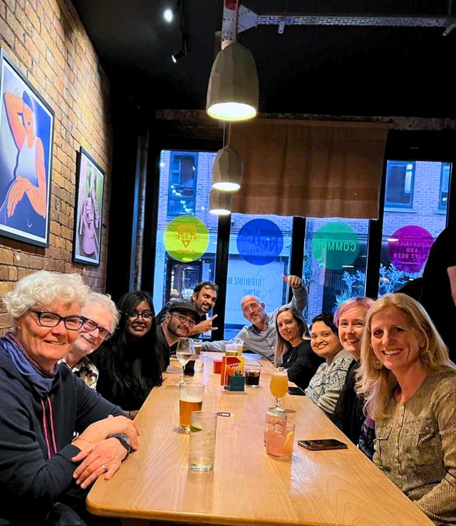
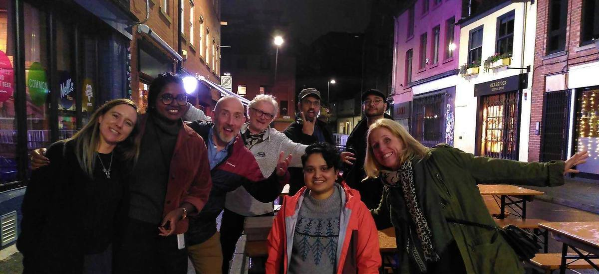

Tech for Good Organisers Network UK brings together people running tech for good communities to share knowledge, strengthen existing networks, and support new ones so the movement can have real, lasting impact.

By tech for good we mean the intentional use of technology to drive positive outcomes for people and planet.
The network at a glance
- Communities See the directory.
- Meetings Three online quarterly meetings and one in-person retreat each year.
- How it’s run By its members, with no central staff.
- Do you run a tech-for-good community? Find out how to join.
- Are you a funder or partner? Contact [FUNDERS CONTACT — Ed to supply].

The network’s own meetings, for its members.
Upcoming
- Loading events…
Past

The network is for people who run tech-for-good communities in the UK. Joining is mostly by invitation, but if you run a community and would like to be part of it, you can apply.
- You fill in the short form below.
- The network looks at the tech-for-good events you have organised.
- We pass your application to the organiser nearest to you.
- We discuss it at the next quarterly meeting.
The communities in the network and where they are. Choose a circle or a name to see who runs it.
Online and UK-wide
- Loading the directory…
Member community Emerging group

These communities were among the network’s founding members. They are no longer active in it, and they are not on the map.